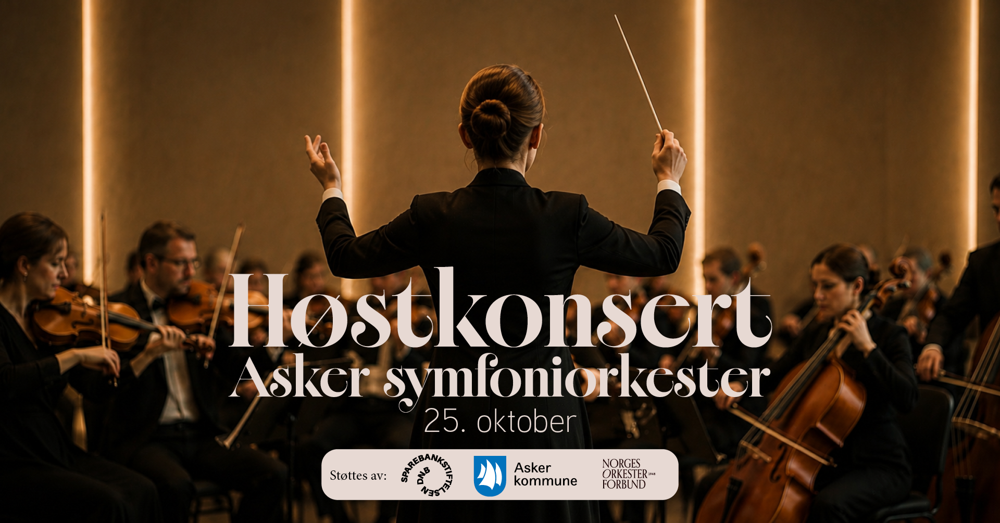
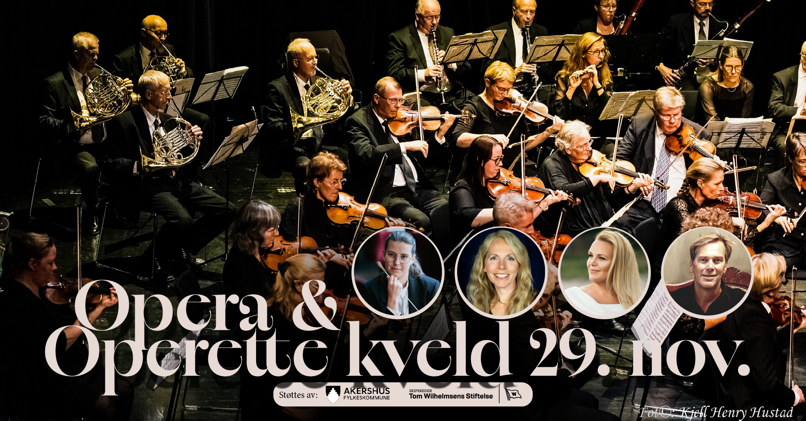

25. oktober
Høstkonsert i Asker kirke
Asker kirke · kl. 18.00
Tsjaikovskij · Bruch · Ida Kamilla Andersen
Kjøp billetterHøstkonsert 2026
Søndag 25. oktober kl. 18.00 i Asker kirke.
Tanja Karita Ikonen dirigerer. Ida Kamilla Andersen er solist i Bruchs fiolinkonsert.


Billetter er i salg
Tsjaikovskij · Bruch · Asker kirke

Kommende konserter
25. oktober
Asker kirke · kl. 18.00
Tsjaikovskij · Bruch · Ida Kamilla Andersen
Kjøp billetter
21. november
Venskaben
Salongorkester, te, kaker og et musikalsk ettermiddagsformat.

Østenstad kirke · kl. 18.00
Guro Haugli dirigerer. Marit Sehl, Cecilie Cathrine Ødegården og Øystein Skre er solister.
Kjøp billetter Les om konsertenBilletter til høstkonserten og Opera & Operettekveld kan kjøpes via eBillett.
Konsert i Dynamitten, Sætre. Mer informasjon kommer.
Opera & operette
Østenstad kirke
Velkommen til en aften fylt med opera i Østenstad kirke. Vi har plukket ut et stort knippe med operaperler. Enten du er en stor operakjenner eller bare har interesse for operaens univers, kan du glede deg til å oppleve operaens mest populære melodier.
Lytt til orkesteret
Et gjensyn med konsertscenen.
Utforsk åtte opptak fra 2025 og 2026.
7. juni 2026
Fra konsertarkivet 01 / 08
 Pavane for bratsj og orkester
7. juni 2026
Pavane for bratsj og orkester
7. juni 2026
 Pierné · Canzonetta
7. juni 2026
Pierné · Canzonetta
7. juni 2026
 Grieg · Peer Gynt, suite nr. 1
7. juni 2026
Grieg · Peer Gynt, suite nr. 1
7. juni 2026
 Grieg · Peer Gynt, suite nr. 2
7. juni 2026
Grieg · Peer Gynt, suite nr. 2
7. juni 2026
 Hummel · Trompetkonsert
26. oktober 2025
Hummel · Trompetkonsert
26. oktober 2025
 Brahms · Ungarsk dans nr. 5
26. oktober 2025
Brahms · Ungarsk dans nr. 5
26. oktober 2025
 Dvořák · Symfoni nr. 8, 1. sats
26. oktober 2025
Dvořák · Symfoni nr. 8, 1. sats
26. oktober 2025
 Dvořák · Symfoni nr. 8, 4. sats
26. oktober 2025
Dvořák · Symfoni nr. 8, 4. sats
26. oktober 2025
Konsertopptak: Knut Helgesen · YouTube
Om oss
Asker symfoniorkester samler musikere på tvers av generasjoner til klassiske hovedverk, lokale prosjekter og samarbeid med solister.
Galleri


Historie
Orkesteret ble stiftet i 1972 og har siden vært en viktig del av musikklivet i Asker.
Gjennom årene har vi fremført alt fra uroppførelser til sentrale symfoniske verk, med særlig vekt på den klassiske og romantiske tradisjonen.
Samarbeid med solister, kor, kulturskolen og andre aktører i regionen har gjort orkesteret til en bred musikalsk møteplass.
Arne Hagen var orkesterets faste dirigent i nesten 30 år. Bildet viser den første konserten i 1973 på Tveter gård.

Salongorkester
Asker symfoniorkester har også et eget salongorkester med musikk inspirert av norske kafeer, restauranter og teatersalonger fra slutten av 1800-tallet og fremover.
Repertoaret beveger seg mellom wienerklassisk taffelmusikk, norske perler og kjente klassiske stykker i et lettere, elegant format.
Salongorkesteret passer godt til mindre arrangementer der musikken skal skape nærhet, atmosfære og historisk klang.
Bli med
Vil du spille symfonisk musikk i et aktivt orkester?
Øvelser tirsdager kl. 19.00–21.45 · leder@asym.no
Kontakt
Spørsmål om konserter, samarbeid eller medlemskap?